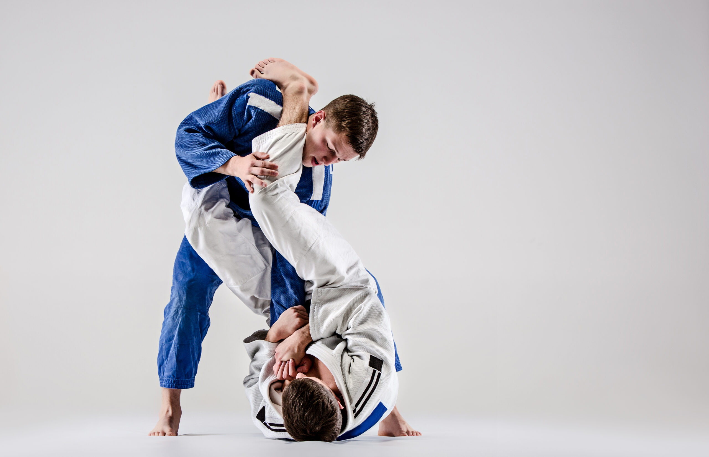
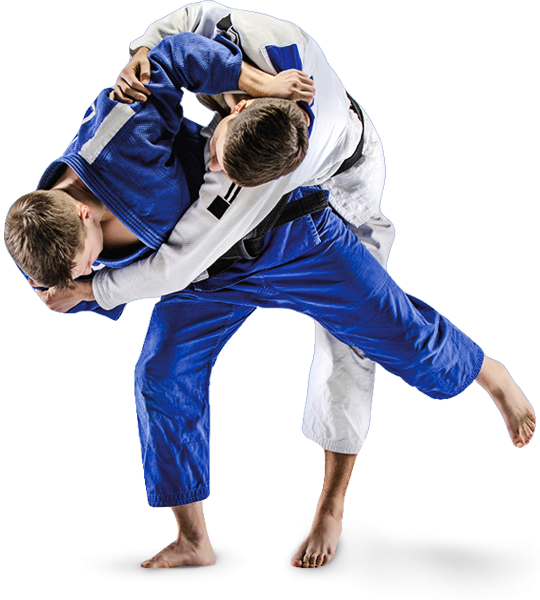

Style walki wręcz
Kliknij na zdjęcie w celu wyświetlenia informacji


Judo
- Sztuka walki stworzona w Japonii jako sport przez Jigorō Kanō
- Techniki judo podzielić można na trzy zasadnicze grupy: rzuty (nage-waza), chwyty (katame-waza) oraz uderzenia (atemi-waza). Z tym, że w judo sportowym nauczane są tylko dwie pierwsze grupy.
- Trening judo opiera się na trenowaniu padów, rzutów, dźwigni i duszeń oraz na randori (sparingu). Walki treningowe, prowadzone w parterze (ne-waza) albo stójce (tachi-waza), nazywają się randori. Walki na zawodach nazywa się shiai.
- Walka trwa 4 minuty. Zwycięża ten zawodnik, który rzuci przeciwnika na plecy, utrzyma go leżącego na macie przez 20 sekund lub założy dźwignię bądź duszenie w sposób, który doprowadzi przeciwnika do poddania się (w każdym przypadku uzyskując ippon i kończąc walkę przed upływem regulaminowego czasu).


